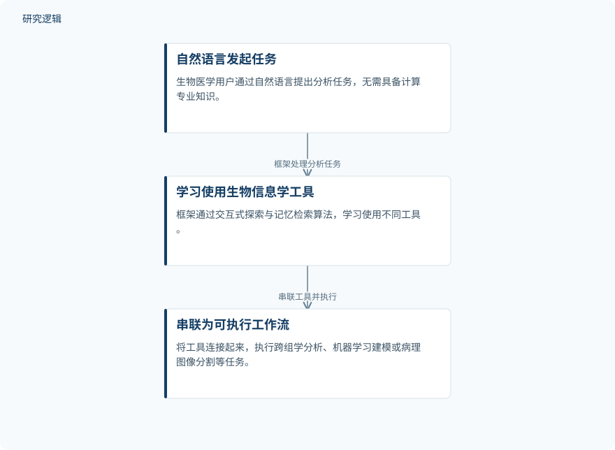

摘要解读
面向自主生物医学数据分析的自进化多智能体大语言模型框架
Empowering AI data scientists using a multi-agent LLM framework with self-evolving capabilities for autonomous, tool-aware biomedical data analyses
解读更新 2026-11-16 00:42 · 依据公开摘要整理，未核验全文细节
生物医学数据分析的自动化，难点不仅是理解问题，还在于调用专业工具并完成多步推理。BioMedAgent尝试把工具学习与工作流执行连接起来，为观察大语言模型如何承担科研分析任务提供了一个具体案例。
文章目录
从理解任务到调用专业工具的障碍
大语言模型智能体能够自动处理复杂任务，辅助科学数据探索，但生物医学分析涉及专业工具和多步推理，仍然构成应用障碍。本文针对的是这两类困难：智能体不仅需要知道要分析什么，还需要学会使用工具，并把多个操作连接成可执行的分析流程。
通过交互探索与记忆检索组织分析流程
作者提出BioMedAgent，一个具有自演化能力的大语言模型多智能体框架。摘要明确介绍的核心方法是交互式探索与记忆检索算法：框架借此学习使用不同的生物信息学工具，并将它们串联为可执行工作流。
在使用入口上，生物医学用户可以通过自然语言发起任务，而不必具备计算专业知识。这里描述的是任务发起方式；摘要没有进一步交代多智能体的角色分工、记忆如何更新，以及自演化能力的具体实现机制。
依据摘要整理的BioMedAgent分析流程


仅概括自然语言发起任务、工具学习与工作流执行的关系，并非论文原图，不表示摘要未披露的内部架构。
下载 SVG图示关系说明
实线表示相邻阶段的信息流，虚线表示跨阶段联系或反馈。
自然语言发起任务 → 学习使用生物信息学工具：框架处理分析任务；学习使用生物信息学工具 → 串联为可执行工作流：串联工具并执行
基准成功率与跨类型分析能力
作者在新发布的BioMed-AQA基准上开展评估，该基准包含327项生物医学数据任务。摘要报告BioMedAgent的成功率为77%，超过其他大语言模型智能体，并在外部BixBench数据集上表现出稳健的泛化能力；摘要未给出后者的具体成绩。
除基准评估外，摘要还报告该框架能够自主完成跨组学分析、机器学习建模和病理图像分割。这些任务展示了其处理不同分析需求的能力，但向其他科学领域扩展仍被表述为潜力，而非已经完成的跨领域验证。
成功率之外，摘要尚不能回答什么
仅凭摘要，尚无法判断任务构成、底层数据样本规模、成功判定标准、比较智能体的配置，以及结果的统计不确定性。327项任务不能直接理解为327个独立生物学样本，也不足以单独说明各类任务上的表现是否均衡。
摘要同样不足以判断外部验证覆盖了哪些工具与数据条件，以及自主分析案例的结果如何核验。这些是当前材料的信息边界，不代表论文没有开展相关工作；本文解读仅依据所提供的完整摘要。
阅读启发：关注工具学习如何支撑多步执行
阅读启发：值得进一步追问的是，交互探索和记忆检索分别如何帮助工具使用，以及这种帮助能否延续到较长的分析流程。对于同样依赖复杂工具集成与多步推理的其他科研领域，可优先关注全文中的工具适配、失败案例和验证边界，而不宜直接套用生物医学基准上的成功率。
以上为本站阅读启发与建议，不是论文已验证的结论。